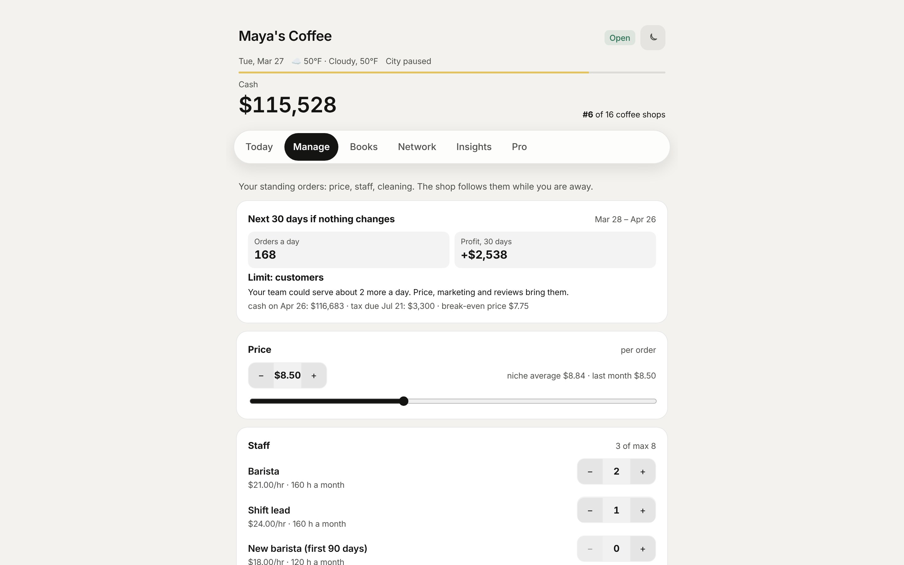

Столько стоит узнать, получится ли у тебя
Кофейня на 18 мест, , Манхэттен: открытие + запас на 6 месяцев — личный план в игре, каждая строка со ссылкой. По США: $80 000–300 000, Toast
«Чистая экономика: аренда, расходы. Мы не тянем»
Половина закрывается за пять лет
Albery Wu, Dandy Espresso, Madison Ave, Манхэттен — закрылась через 5 месяцев: “It was pure economics: rents, expenses. We just can't afford it.” dnainfo.com, 2014 · Общепит США: 81,6% живы через год, около 50% через пять — BLS, Business Employment Dynamics, table 7

Проживи первый год до того, как рискнёшь
Экран города в игре, снят с компьютера 1440×900: настоящие улицы East Village, заведения соседей, события дня. Съёмка — docs/pitch/deck/capture.mjs
Ты решаешь — и сразу видишь, чем это кончится



Экран Manage: цена → , три настоящих снимка подряд. Прогноз считает движок игры; это модель, не обещание
Здесь нет выдуманных чисел
Сосед — не декорация
Один день в жизни — один месяц в игре
Путь к $100M ARR
Модель: docs/pitch/model.mjs. LTV — удержание RevenueCat 2026; CAC смешанный — клик Meta $0,70, 90% органика (допущение); своя конверсия ещё не измерена. Ступени — платят 4% круга (допущение), шкала логарифмическая. $100M = платящих × $14,95 × 12 = из 13,7 млн (NORC, Census)